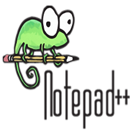
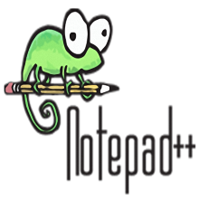
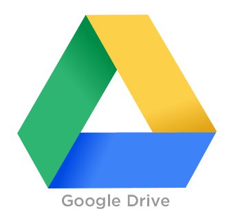
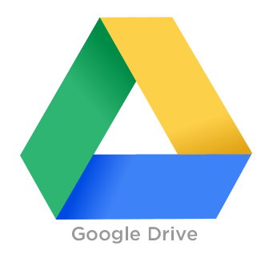

Durch unser Projekt wird die Zusammenarbeit zwischen Schüler, Lehrer und auch dem Unternehmer enorm erleichtert.
Jede dieser Parteien kann jederzeit die derzeitige Lage des Projektes verfolgen und sich leicht beteiligen.
Der Auftraggeber kann jederzeit Feedback geben, Wünsche oder auch Fehler dem Projekteam mitteilen.
Weiters erleichtert “Connect you” die Dokumentation.
Durch das einbinden in unsere Schulwebseite BBS-Rohrbach.at können auch unbeteiligte jeder Zeit den Fortschritt wie auch das Ergebnis betrachten.
Das Projektportfolio wird automatisch generiert und auf der Website dargestellt.
Der Unternehmer erhält durch “Connect you” eine übersichtliche Darstellung des Projektes.
Durch die Widgets hat er eine einfach Fortschrittskontrolle und ist somit immer am neuesten Stand.
Außerdem erhält der Unternehmer eine ganz eigene Ansicht in Form eines speziell für den Unternehmer gestaltetes pinboard.
Ein großes Anliegen ist es uns, denn bisherigen “Papierkrieg” möglichst zu minimieren. “Connect you” soll Schüler und Unternehmen näher zusammen bringen
und beide Parteien zum gemeinsamen Arbeiten animieren. Speziell für die Schule soll es die Organisation und die Übersicht der Maturaprojekte erleichtern.
Unser Auftraggeber ist unsere Schule - die BBS-Rohrbach, welche für Ihre hervorragende Ausbildung in den Bereichen Sprachen, Wirtschaft, IT und Hauswirtschaft bekannt ist. Durch die verschiedenen Ausbildungsschwerpunkte ist für jeden Schüler etwas dabei.
Ansprechpartner und maßgebliche Hilfe war unser IMC-Lehrer Ingo Lacheiner, welcher uns immer mit Rat und Tat zur Seite stand und uns in allen Bereichen unterstützte. Hierbei ein großes Dankeschön, da es ohne seine Hilfe nicht möglich gewesen wäre ein Projekt in dieser Größe zu realisieren.
Dominik Falkner war Projektleiter unserer Gruppe und trug neben der Verantwortung auch maßgeblich zur Erreichung unseres Zieles bei. Seine Aufgaben waren unter anderem die Koordination des Teams, Einteilung der jeweiligen Aufgaben, Erkennen der Stärken eines jeden Team-Mitglieds und er selbst programmierte auch selbst.
Dorfer Valentin war Stellvertretender Projektleiter und vertrat Dominik Falkner, falls dieser verhindert war. Er selbst war für die Bereiche Typo3 und CSS zuständig, da er dort seine Stärken ausspielen konnte. Ebenfalls zwei Bereiche in welchen er sehr gut ist, sind Javascript und jQuery.
Dikany Lucas war Chefdesigner unseres Teams. Durch seine hervorragenden Photoshop Kenntnisse und seine kreative Ader, welche ihn zu wahren Meisterwerken in Sachen Design verhilft, war dies die richtige Position im Team. Zudem war er auch noch mit den HTML und CSS arbeiten beschäftigt.
Peneder Martin war für die HTML und CSS Arbeiten im Team zuständig. Fotografische Dinge wurden ebenfalls in seine Hände gelegt wie z.B. die Teamportraits und die Aufnahmen der Schule. Ein großer Bereich war neben Dikany Lucas, die Gestaltung unsere Promotion Website.
Christoph Filz war für die Dokumentation und das vorbereiten der Texte für Präsentationen zuständig. Ebenfalls stammen die Texte für den Imagefilm von ihm, bzw. war er auch in der Rolle des Sprechers am Film beteiligt.
 


 

Hier sieht man unsere verwendeten Technologien, wodurch das Projekt realisiert wurde.
Typo3: Als Basis für unser Projekt
Prezi: Für die Gestaltung der Präsentationen und zum präsentieren.
Notepad++: Für alle Arbeiten welche mit HTML und CSS zu tun hatten.
HTML5: Als Basis für unsere Promotion Website.
CSS3: Dienste ebenfalls als Basis für die Promotion Website.
Google Drive: Als Speicher für alle Dokumente und rund um das Projekt.